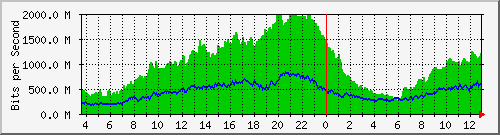
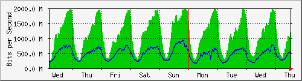
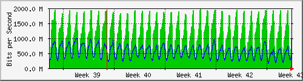
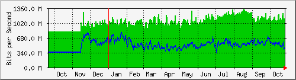

Traffic Analysis for Po1 -- ISP-border.sky
| System: | ISP-border.sky in Stoika |
| Maintainer: | falcon@skyinet.org |
| Description: | Port-channel1 |
| ifType: | propVirtual (53) |
| ifName: | Po1 |
| Max Speed: | 2000.0 Mbits/s |
| Ip: | No Ip (No DNS name) |
The statistics were last updated Thursday, 26 October 2017 at 12:55,
at which time 'ISP-border.sky' had been up for 8 days, 10:32:46.
`Daily' Graph (5 Minute Average)

|
Max |
Average |
Current |
| In |
1999.4 Mb/s (100.0%) |
1012.2 Mb/s (50.6%) |
1201.3 Mb/s (60.1%) |
| Out |
831.5 Mb/s (41.6%) |
440.2 Mb/s (22.0%) |
548.1 Mb/s (27.4%) |
`Weekly' Graph (30 Minute Average)

|
Max |
Average |
Current |
| In |
1985.6 Mb/s (99.3%) |
1116.5 Mb/s (55.8%) |
1198.2 Mb/s (59.9%) |
| Out |
936.2 Mb/s (46.8%) |
475.6 Mb/s (23.8%) |
555.3 Mb/s (27.8%) |
`Monthly' Graph (2 Hour Average)

|
Max |
Average |
Current |
| In |
1960.0 Mb/s (98.0%) |
1110.4 Mb/s (55.5%) |
976.5 Mb/s (48.8%) |
| Out |
985.8 Mb/s (49.3%) |
547.8 Mb/s (27.4%) |
489.4 Mb/s (24.5%) |
`Yearly' Graph (1 Day Average)

|
Max |
Average |
Current |
| In |
1340.5 Mb/s (67.0%) |
1033.3 Mb/s (51.7%) |
1126.0 Mb/s (56.3%) |
| Out |
797.0 Mb/s (39.9%) |
513.3 Mb/s (25.7%) |
456.3 Mb/s (22.8%) |
| GREEN ### |
Incoming Traffic in Bits per Second |
| BLUE ### |
Outgoing Traffic in Bits per Second |